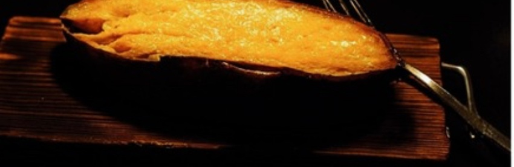

日本最古のさつまいも伝来地、宮古島
島を救った芋に、その島の塩を。
1597年、嵐に二度流されながらも
一本の芋かずらを抱えて、宮古島へ帰った人がいました。
その芋は、飢えに苦しむ島を救いました。
整体師の手で芋の繊維を揉みほぐし、じっくり焼いて冷やす“揉み焼き”。
仕上げに、琉球石灰岩が濾した地下海水から生まれる雪塩をひとふり。
日本橋
宮古島の雪塩で食べる 冷やし焼き芋
甘いは太陽、 しょっぱいは海。

日本最古のさつまいも伝来地、宮古島
島を救った芋に、その島の塩を。
1597年、嵐に二度流されながらも
一本の芋かずらを抱えて、宮古島へ帰った人がいました。
その芋は、飢えに苦しむ島を救いました。
整体師の手で芋の繊維を揉みほぐし、じっくり焼いて冷やす“揉み焼き”。
仕上げに、琉球石灰岩が濾した地下海水から生まれる雪塩をひとふり。